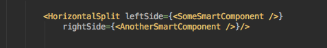
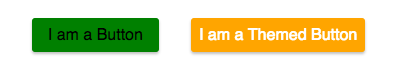
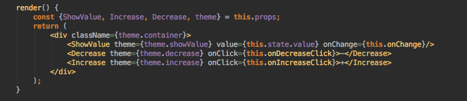
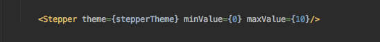
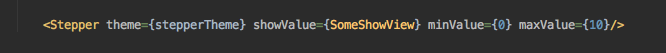
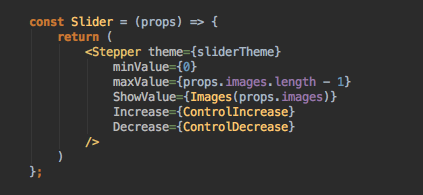
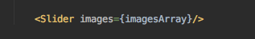

UI-кит. Как загарпунить белого кита и не утонуть в коде
Ярослав Иванов Devexperts FrontEnd-Team
DX-Trade
Gedik
Phinom
При работе с проектом хочется так:
И совсем не хочется так:
Если работа над проектом длится долго:
Проблема!
Хочется быстро собирать интерфейс используя рабочие, протестированные компоненты.
Хочется легко модифицировать внешний вид компонента.
Хочется легко расширять функциональность базовых UI-компонентов.
???
Хочется чтобы вот сразу вжух и все само...
UI-Kit что это и зачем он нужен
Пункт №1
Хочется быстро собирать сложные элементы интерфейса используя рабочие, протестированные
компоненты.
...
Решение!
UI-кит — библиотека компонентов из которых мы быстро собираем необходимые нам элементы интерфейса
набивая их логикой взаимодействия с пользователем.
Бонус:
UI-элементы выглядят одинаково на всех платформах.
UX одинаков и не требует длительного обучения для работы с приложением при переходе с платформы на
платформу.
От CSS к CSS-модулям
Пункт №2
...
Хочется легко модифицировать внешний вид компонента.
...
CSS — боль на больших проектах
Глобальное пространство имен
Разрешение зависимостей
Поиск «мертвого» кода
Отсутствие констант
Неоднозначный результат (каскад)
БЭМ
При использовании этой методологии мы можем быть уверены что className уникален и что за счет соглашения Block,
Element, Modificator мы снижаем риск специфического отображения.
Блоки могут использоваться в нескольких местах сайта;
Элементы являются частью блока и не имеют функционального смысла вне блока;
Модификаторы представляют собой свойства блока или элемента, которые меняют
его внешний вид или
поведение.
БЭМ — не все так гладко
Процедура выбора className очень кропотлива и отнимает достаточно большое количество времени.
Длинные имена классов раздувают разметку.
Необходимо явно расширять каждый компонент интерфейса при каждом повторном использовании.
Излишне семантическая разметка.
БЭМ — не все так гладко
CSS-модули
Динамическое создание имен классов для каждого локально заданного стиля.
При помощи CSS-модули можно автоматизировать БЭМ-нотацию за счёт
генерирования уникального className, который не станет конфликтовать ни с одним другим.
CSS-модули
Глобальное пространство имен
Разрешение зависимостей
Поиск «мертвого» кода
Неоднозначный результат (каскад)
Темизация UI компонетов. react-css-themr
Все хорошо! CSS-модули сделали css-стили компонентов изолированными, а сам css-код структурированным и
привязанным к конкретным компонентам. Но есть одна проблема стили стали слишком изолированными!
...
Хочется легко модифицировать внешний вид компонента.
...
Решение!
Создаем компонент для которого в последствии через свойства компонента мы будем задавать тему:
Button.js
Компонент определяет API для темизации который состоит из трех имен классов button, icon и content. И теперь мы
можем использовать компонент button например с темой success в которой мы определили стили для button, icon и
content в файле successButton.css:
SuccessButton.js
Компонент Button один и тот-же! Мы просто меняем тему для него...
react-css-themr
В приведенном выше примере мы используем css-модули, но возникает проблема склейки имен классов и вручную
заниматься этим не очень удобно. Библиотека react-css-themr облегчает работу с темизируемыми
компонентами.Можно определить тему не только для компонента, но и для всего приложения передавая
компонентам, при помощи провайдера тем, соответствующие им темы через контекст.
Кастомизируемые UI-компоненты
Пункт №3
...
...
Хочется легко расширять функциональность UI-компонентов.
...
Layout-компонент
Создадим компонент который отображает контент в две колонки:
Теперь достаточно передать в виде пропсов два компонента и готово!

Layout-компонент
Получаем два виджета в две колонки:

Layout-компонент. Зачем?
Используя этот паттерн мы можем создавать компоненты отвечающие только за расположение контента.
Higher Order Component
Давайте сделаем компонент Stepper:
Его код выглядит примерно так:

И теперь если не передавать управляющих и управляемый компоненты:

Мы получаем:
Вместо дефолтного управляемого компонента можно передать любой компонент отвечающий API степпера:

И получим:
На базе Степпера мы можем создать например Слайдер:

И теперь просто вызвав Slider и передав ему массив картинок:

Получаем простенький слайдер:
HOC. Зачем?
Используя этот паттерн мы можем создать фабрику компонентов, гененрируя новые компоненты с расширенной
функциональностью. А также можем отделить логику компонента от способов ее реализации.
Переиспользуемые компоненты
Переиспользуемые компоненты
Переиспользуемые компоненты
Для решения задачи создания компонента реализующего календарный способ отображения событий и одновременно
являющегося виджетом в отображении событий в виде ленты был использован немного модифицированный компонент
Calendar из библиотеки dx-components.
Один компонент — два способа использования. Круто!
Проблема!
Хочется быстро собирать сложные элементы интерфейса используя рабочие, протестированные компоненты. Создаем и используем UI-кит
Хочется легко модифицировать внешний вид компонента. СSS-модули и react-css-themr
Хочется легко расширять функциональность базовых UI-компонентов. Layout-компоненты, HOC...
UI-кит. Как загарпунить белого кита и не утонуть в коде